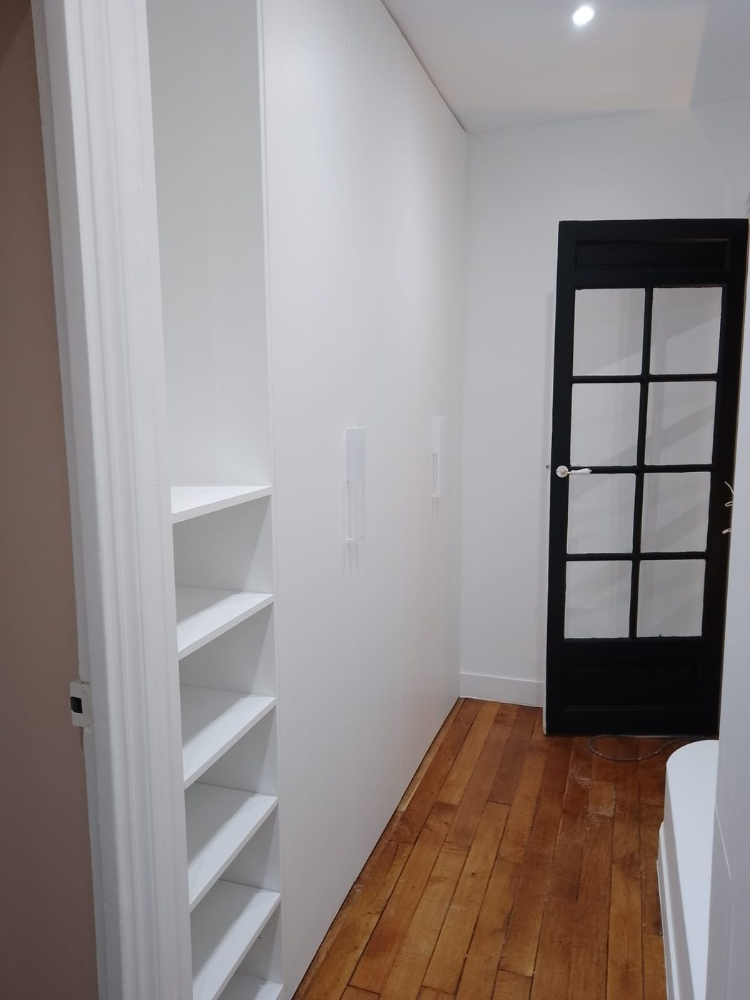

Prestations / Vitrerie et miroiterie
Vitrerie et miroiterie
Remplacement de vitrages, miroirs sur mesure et dépannage, à Paris et en proche couronne.

Ce que nous réalisons
Vitrage, miroirs, dépannage
Ce que nous prenons en charge
- Remplacement de vitrage cassé, simple ou double, sur menuiserie bois, alu ou PVC.
- Passage du simple au double vitrage sur menuiserie ancienne, quand la feuillure le permet.
- Miroirs sur mesure : salle de bain, dressing, mur d'accent, avec perçages et biseaux.
- Vitrages de portes intérieures, portes d'atelier et cloisons vitrées.
- Verre feuilleté de sécurité en garde-corps, table basse et tablette.
- Dépannage après effraction ou bris, avec mise en sécurité provisoire.
Nous ne posons pas de menuiseries neuves complètes ni de verrières structurelles. Pour une verrière d'atelier avec ossature métallique, il vous faut un métallier, nous intervenons sur le vitrage.
Bon à savoir
Mesures, délais, copropriété
Trois points qui déterminent le prix
La prise de mesures. Un vitrage se commande au millimètre après dépose de l'ancien, ou avec relevé de feuillure. Nous ne travaillons pas sur des mesures transmises par téléphone : une erreur de 3 mm rend le verre inutilisable et non repris.
Le délai. Un vitrage standard est disponible sous 48 à 72 heures. Un verre feuilleté, dépoli, trempé ou de grande dimension demande une à deux semaines de fabrication.
La copropriété. Dans les immeubles parisiens sous protection patrimoniale, les fenêtres sur rue sont souvent soumises à des prescriptions d'aspect. Vérifiez le règlement avant de changer le type de vitrage.
Prix indicatifs
Fourchettes 2026, pose comprise
Combien ça coûte
| Prestation | Prix HT |
|---|---|
| Remplacement de vitrage simple, pose comprise | 150 à 280 €/m² |
| Remplacement de double vitrage, pose comprise | 260 à 450 €/m² |
| Verre feuilleté de sécurité | 320 à 550 €/m² |
| Miroir sur mesure, pose comprise | 180 à 380 €/m² |
| Vitrage de porte intérieure, dépose et repose | 220 à 420 € forfait |
| Dépannage et mise en sécurité après bris | 180 à 350 € forfait |
Le déplacement et la prise de mesures sont inclus dans nos forfaits. Un vitrage sur mesure est fabriqué à la commande et ne peut pas être repris.
Prix indicatifs, hors fourniture lorsque précisé. TVA à 10 % pour les logements achevés depuis plus de deux ans. Chaque chantier fait l'objet d'un devis détaillé après visite technique gratuite.
Questions fréquentes
4 réponses
Questions fréquentes
Intervenez-vous en urgence après un bris ?
Nous assurons la mise en sécurité provisoire par panneautage, puis le remplacement dès réception du verre. Nous ne sommes pas un service d'urgence 24 h/24.
Peut-on passer en double vitrage sans changer la fenêtre ?
Parfois, si la feuillure de la menuiserie est assez profonde et le châssis en bon état. Sur une fenêtre ancienne à petits bois, c'est rarement possible.
Le remplacement est-il pris en charge par l'assurance ?
Souvent, au titre de la garantie bris de glace. Nous fournissons une facture détaillée et un constat de l'état, à transmettre à votre assureur.
Faites-vous les miroirs de salle de bain avec éclairage ?
Nous fournissons et posons le miroir, y compris avec perçages pour applique ou réservation pour bandeau LED. Le raccordement électrique est fait par un électricien.
Voir aussi : peinture intérieure · façades · peintures décoratives
Passer à l'action
Réponse sous 24 h
Parlons de votre projet
Visite technique gratuite, devis détaillé sous 48 heures, dans l'est parisien et à Paris.